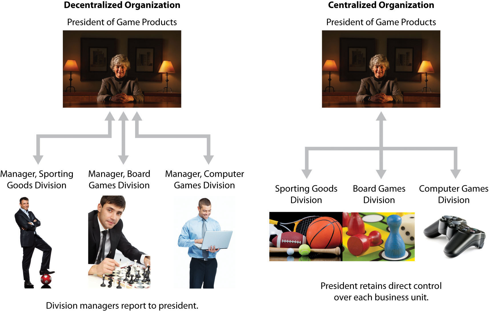

Question: Many types of organizations decentralize operations to better manage each segment of the organization. What does it mean to decentralize operations?
Answer: The term used to describe this type of organizational structure is decentralized organizations. Decentralized organizationsOrganizations that delegate decision-making and operational responsibilities to the managers of each segment of the organization. Segments are often called divisions or subunits. delegate decision-making and operational responsibilities to the managers of each segment of the organization. (Segments are often called divisions or subunits.) For example, universities are often segmented by discipline with one manager, or dean, responsible for each discipline (physical education, social sciences, business, etc.). Retail companies are often segmented by region, with one manager responsible for each region. Service companies are often segmented by service category, with one manager responsible for each category (e.g., an accounting firm divided into audit and tax). Decentralization is not limited to a particular type of organization, and most organizations that have grown in size and complexity decentralize to some extent.
Question: Why do organizations decentralize operations?
Answer: Organizations often decentralize out of necessity as they expand. The responsibility of one manager, or group of managers, to run the entire organization can become overwhelming as the number of products offered increases.
For example, Game Products, Inc., began by selling two board games to several retail stores in the northeast United States. The company did not need to decentralize at that point because it offered only two products and the geographic region in which it sold those products was limited.
A few years later, Game Products expanded sales to Canada and the southeast Unites States, while also venturing into the computer games industry by purchasing a small maker of computer games. Although operations were not decentralized at this time—all decisions were still made at headquarters—top management was beginning to feel the strain of trying to manage two segments of the company. The decision-making process was cumbersome and slow, and the company began to miss market opportunities that would have increased sales and profits.
Two years later, Game Products decided to enter the sporting goods market, and top management and the board of directors agreed that decentralization was critical to the future success of the company. As a result, they assigned a manager to run each division. This change allowed top management to concentrate on high-level issues. such as long-range strategic planning, and it placed the decision making in the hands of managers who were intimately familiar with the operations of their individual divisions.
Although Game Products ultimately decided to decentralize operations, there are advantages and disadvantages to decentralizing. Figure 11.1 "Decentralized Versus Centralized Organizations" illustrates how operations would look at Game Products, Inc., if operations were decentralized or if they remained centralized.
Figure 11.1 Decentralized Versus Centralized Organizations
Question: What are the advantages of decentralizing operations for companies like Game Products, Inc.?
Answer: Organizations like Game Products tend to decentralize as their operations grow and become more complex. The advantages of decentralizing are as follows:
Note 11.3 "Business in Action 11.1" provides a real-life example of an organization that benefitted from decentralizing.
Advantages of Decentralizing at a Community College
Sierra College is located in one of the fastest growing counties in California. Student enrollment has increased from 5 percent to 10 percent per year over the last decade. Prior to this rapid growth, the college held each division dean responsible for most administrative duties. For example, the dean of business and technology was responsible for administrative duties, such as hiring faculty members and developing the schedule of classes to be offered each semester.
As student enrollment increased, course offerings expanded, and faculty headcount grew into the hundreds, the administrative duties became overwhelming for each division dean. As a result, management decided to decentralize further by creating department chair positions to help with the administrative duties related directly to each department. This change gave each department (business, music, computer science, etc.) more control over day-to-day activities, and it allowed the deans to focus on larger college issues, such as strategic planning and community relations. It also allowed for quicker responses to issues, such as faculty teaching assignments and classroom space utilization.
Source: Based on the author’s experience.
Question: What are the disadvantages of decentralizing operations for organizations, such as Game Products?
Answer: The results of decentralizing operations are not always positive. Three disadvantages of decentralizing are as follows:
Disadvantage of Decentralizing an Accounting Firm
Arthur Andersen was a large, decentralized accounting firm with offices located throughout the world. One or more partners operated each office independently. In 2002, Arthur Andersen had 85,000 employees worldwide. The firm was indicted in March 2002, and later found guilty, for obstructing justice by shredding tons of documents related to its audit work for Enron Corporation. As a result, Arthur Andersen agreed to cease its accounting practice in the United States in August 2002. By 2005, only 200 employees remained at Arthur Andersen to wrap up the dissolution of the firm.
Although the entire firm was indicted and found guilty of obstruction of justice, the decision to shred documents was made at the Houston office, where the bulk of the shredding took place. This serves as an extreme example of the disadvantage of decentralizing an organization. Decisions left to the division managers (“partners” in this case) can have a negative effect on the entire organization.
Note that the U.S. Supreme Court overturned the guilty verdict of the U.S. District Court in June 2005, but the damage was done and the firm did not survive.
Source: Charles Lane, “Justices Overturn Andersen Conviction,” Washington Post, June 1, 2005, http://www.washingtonpost.com.
Landscaping Services, Inc., founded and operated by Ed Barnes, has seen revenues double each year for the past three years. Although Ed has hired several laborers to ease the workload, he is still working seven days a week, 10 hours a day. Ed would like to hire a manager to assist in managing landscaping projects and has asked for your advice.
Solution to Review Problem 11.1
There are several potential disadvantages to decentralizing. Two examples follow:
There are several potential advantages to decentralizing. A few examples follow: